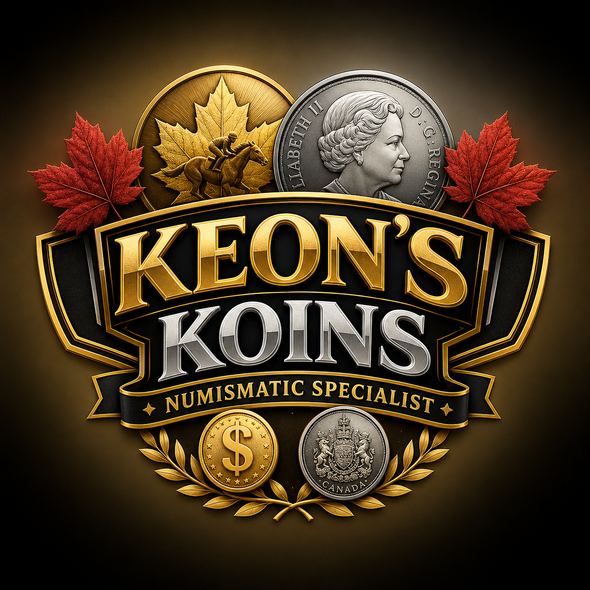

¢
Canadian Coins
Canadian cents, nickels, dimes, quarters, loonies, toonies, and more.
Shop Canadian Coins →Canadian Coins • Mint Sets • Collector Finds
Browse Canadian coins, mint sets, special coins, and unique collectible pieces. New inventory is added through our eBay store.

Shop by category
Canadian cents, nickels, dimes, quarters, loonies, toonies, and more.
Shop Canadian Coins →Proof sets, uncirculated sets, annual sets, and commemorative releases.
Shop Mint Sets →Silver coins, error coins, hard-to-find pieces, and collector specials.
Shop Special Coins →Featured Selections
A showcase of favorite recent additions, collector highlights, and standout finds from Keon's Koins.
Hand-selected collectible Canadian coin currently available.
View Current Listings →Premium mint set chosen for quality and collector appeal.
View Mint Sets →Special coin, silver issue, or hard-to-find collectible piece.
View Rare Finds →Why shop with us?
Keon's Koins is designed to make browsing simple and trustworthy. Use the dropdown menus to jump to the categories you care about, then shop available listings through eBay.
About
Welcome to Keon's Koins. We specialize in Canadian coins, mint sets, special coins, and collectible pieces for hobbyists and collectors.
Browse Current ListingsBeyond the Collection
Keon's Koins was founded on a passion for collecting, history, and the excitement of discovering something special.
Beyond numismatics, Keon is also a dedicated horse-racing fan who appreciates the tradition, strategy, and excitement that make both hobbies so rewarding.
Whether it's a rare Canadian coin or a memorable day at the track, the pursuit of unique treasures and lasting value remains the same.
Visit Our Store